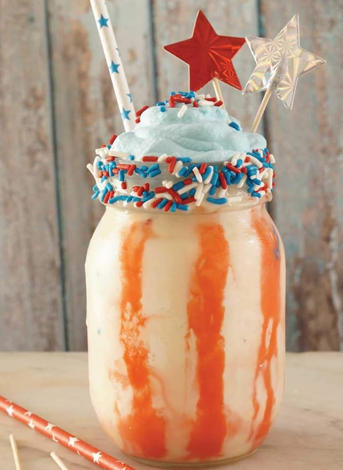

The 76
Nothing says summertime like a good ol' ice-cold milkshake!
Summer evenings were hot in Bloomington, Indiana, where Jack grew up.
But after a long day of working on the farm, he was free to go spend time with friends
at the local ice cream shop, where this milkshake was a specialty.
Ingredients
- 1½ cups heavy cream, divided
- 1 cup white chocolate chips
- Red, white and blue sprinkles
- Red food coloring
- Blue food coloring
- 2 cups whole milk
- 8 scoops of vanilla ice cream
- 1 teaspoon vanilla extract
Steps
- Start by combining ½ cup of the heavy cream and all the white chocolate in a small bowl.
Microwave in 20-second bursts, being sure to stir in between each burst, until the chocolate is melted.
- Dip the rims of two tall serving glasses in the white chocolate, let any excess drip off, and then roll in the red, white, and blue sprinkles to make a festive rim.
- Mix the red food coloring with the remaining chocolate until you have a nice bright color.
Using a spoon or a piping bag, drizzle stripes of red down the inside of the glass. Set aside or in the freezer to chill.
- Make the whipped cream by beating the remaining 1 cup of heavy cream with an electric mixer until stiff peaks form, which should only take a minute or two.
Beat in the blue food coloring, and then set the whipped cream aside.
- Combine the milk, ice cream, and vanilla extract in a blender and blend until smooth.
Pour the milkshake into the prepared glasses, top with blue whipped cream, and serve with straws.